MATHS :: Lecture 03 :: Bionomial

BINOMIAL THEOREM
A Binomial is an algebraic expression of two terms which are connected by the operation ‘+’ (or) ‘-‘
For example, x+siny, 3x2+2x, cosx+sin x etc… are binomials.
Binomial Theorem for positive integer:
If n is a positive integer then
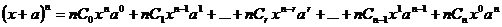 |
----(1) |
Some Expansions
a) If we put a = -a in the place of a in
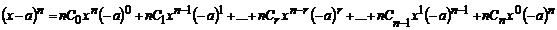
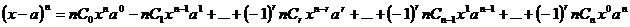b) Put x =1 and a = x in (1)
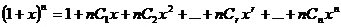
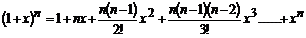 ----------(2)
c) Put x = 1 and a = -x in (1)
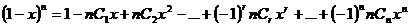
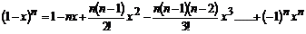-----------(3)
(d) Replacing n by – n in equation (2)
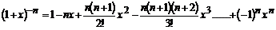 ---------(4)
e) Replacing n by – n in equation (3)
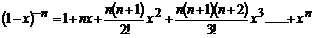 -----------(5)
Special Cases
1. 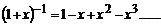
2. 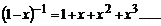
3. 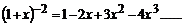
4. 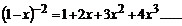
Note:
1. There are n+1 terms in the expansion of (x+a)n.
2. In the expansion the general term is 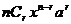. Since this is the (r+1)th term, it is denoted by Tr+1 i.e. 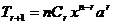.
3. are called binomial coefficients.
4. From the relation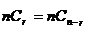, we see that the coefficients of terms equidistant from the beginning and the end are equal.
Note: The number of terms in the expansion of (x+a)n depends upon the index n. the index is either even (or) odd. Then the middle term is
Case(i): n is even
The number of terms in the expansion is (n+1), which is odd.
Therefore, there is only one middle term and is given by 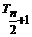
Case(ii) : n is odd
The number of terms in the expansion is (n+1), which is even.
Therefore, there are two middle terms and they are given by 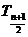 and 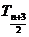
Examples
1. Expand (i) 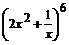
2. Find 117.
Solution:
117= (1+10)7
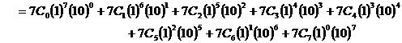
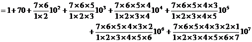
= 1+ 70 + 2100 +35000 + 350000 + 2100000 + 7000000 + 10000000
= 19487171
2. Find the coefficient of x5 in the expansion of 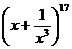
Solution
In the expansion of, the general term is
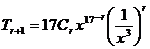
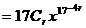
Let  be the term containing x5
be the term containing x5
then, 17-4r = 5 Þ r = 3
\ 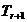=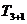
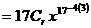= 680 x5
\coefficient of x5 = 680.
3. Find the constant term in the expansion of 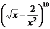
Solution
In the expansion of, the general term is
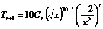
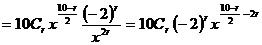
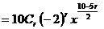
Let be the Constant term then,
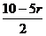= 0Þ r = 2
\ The constant term 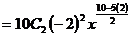
= 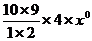 = 180
| Download this lecture as PDF here |